배관기능장 (2008-07-13 기출문제)
1과목: 임의구분
1. 난방시설에서 팽창탱크의 설치 목적이 아닌 것은?
- 보일러 운전 중 장치 내의 온도상승에 의한 체적 팽창이나 이상 팽창의 압력을 흡수한다.
- 팽창한 물을 배출하여 장치 내의 열손실을 방지한다.
- 운전 중 장치 내를 일정한 압력으로 유지하고 온수온도를 유지한다.
- 공기를 배출하고 운전정지 후에도 일정압력이 유지된다.
(정답률: 72%)

2. 중앙식 급탕설비 중 간접 가열식에 비교한 직접 가열식 급탕 설비의 특징이 아닌 것은?
- 열 효율 면에서 경제적이다.
- 건물 높이에 해당하는 수압이 보일러에 생긴다.
- 보일러 내부에 물때가 생기지 않아 수명이 길다.
- 고층 건물보다는 주로 소규모 건물에 적합하다.
(정답률: 82%)
3. 집진장치 중 일반적으로 집진 효율이 가장 좋은 것은?
- 중력식 집진장치
- 관성력식 집진장치
- 원심력식 집진장치
- 전기 집진장치
(정답률: 96%)
4. 일반적인 기송 배관의 형식이 아닌 것은?
- 진공식
- 압송식
- 진공 압송식
- 분리기식
(정답률: 92%)
5. 증기난방에 비교한 온수난방의 특징 설명으로 틀린 것은?
- 실내의 쾌감도가 높다.
- 난방부하의 변동에 따른 온도 조절이 곤란하다.
- 방열기의 표면온도가 낮아서 화상의 염려가 없다.
- 보일러 취급이 용이하고 소규모 주택에 적당하다.
(정답률: 83%)
6. 25A용 2개, 20A용 3개, 15A용 2개의 급수전을 사용할 때 급수 주관의 호칭규격을 급수관의 균등표를 이용하여 계산하시오. (단, 동시 사용률은 무시한다.)
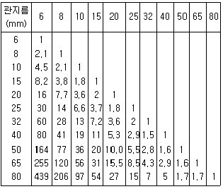
- 32A
- 40A
- 50A
- 65A
(정답률: 84%)
7. 인접 건물의 화재로부터 해당 건물을 보호 예방하기 위하여 창이나 벽, 지분 등에 물을 뿌려 수막을 형성하기 위하여 사용하는 것은?
- 송수구
- 드렌처
- 스프링 쿨러
- 옥내 소화전
(정답률: 94%)
8. 공조설비의 냉각탑에 관한 설명으로 가장 적합한 것은?
- 오염된 공기를 세정하며 동시에 공기를 냉각하는 장치
- 찬 우물물을 분사시켜 공기를 냉각하는 장치
- 냉매를 통과시켜 주위의 공기를 냉각하는 장치
- 응축기의 냉각용수를 재냉각시키는 장치
(정답률: 72%)
9. 수관식 보일러의 특징 설명으로 틀린 것은?
- 보일러수의 순환이 빠르고 효율이 높다.
- 전열면적이 커서 증기발생량이 빠르다.
- 구조가 단순하여 제작이 쉽다.
- 급수의 순도가 나쁘면 스케일이 발생하기 쉽다.
(정답률: 67%)
10. 화학배관설비에서 화학장치용 재료의 구비조건으로 틀린 것은?
- 접촉 유체에 대해 내식성이 클 것
- 고온 고압에 대한 기계적 강도가 클 것
- 저온에서 재질의 열화가 클 것
- 크리프(creep)강도가 클 것
(정답률: 81%)
11. 가스 배관의 보냉 공사 시공시 주의 사항으로 틀리는 것은?
- 진동으로 인해 보온재가 탈락되지 않도록 견고하게 고정한다.
- 배관 지지부의 보냉은 보냉재를 충분히 밀착시키고 방습 시공을 완전하게 해준다.
- 배관을 보냉할 때는 2~3개의 관을 함께 보냉재로 싼다.
- 배관의 말단의 플랜지부 등에는 저온용 매스틱을 발라주고 아스팔트 루핑을 사용해서 방습한다.
(정답률: 95%)
12. 무기산 화학세정 약품 중 성상이 분말이므로 취급이 용이하고, 비교적 저온(40℃ 이하)에서도 물의 경도 성분을 제거할 수 있는 능력이 있어 수도설비 등의 세정에 적당한 산은?
- 염산
- 불산
- 인산
- 설퍼민산
(정답률: 83%)
13. 순환법에 의한 화학세정의 공정을 순서대로 열거한 것 중 가장 적합한 것은?
- 물세척→중화 방청→탈지세정→물세척→건조→물세척→산세척
- 무세척→탈지세정→산세척→물세척→중화 방청→건조→물세척
- 물세척→탈지세정→물세척→산세척→중화 방청→물세척→건조
- 물세척→산세척→물세척→중화 방청→탈지세정→물세척→건조
(정답률: 81%)
14. 피드백 제어 방식에서 연속 동작에 해당 되는 것은?
- ON-OFF 동작
- 다위치 동작
- 불연속 속도 동작
- 적분 동작
(정답률: 82%)
15. 보일러의 수면계 기능시험의 시기로 틀린 것은?
- 보일러를 가동하기 전
- 보일러를 가동하여 압력이 상승하기 시작했을 때
- 2개 수면계의 수위에 차이가 없을 때
- 수면계 유리의 교체, 그 외의 보수를 했을 때
(정답률: 81%)
16. 화재 설명에 대해 틀린 것은?
- A급 화재 : 일반 화재
- B급 화재 : 유류 화재
- C급 화재 : 종합 화재
- D급 화재 : 금속 화재
(정답률: 91%)
17. 산소-아세틸렌 가스 용접에 사용하는 산소 용기의 색은?
- 흰색
- 녹색
- 회색
- 청색
(정답률: 90%)
18. 자동세탁기, 자동판매기, 교통신호기, 엘리베이터, 네온사인 등과 같이 각 장치가 유기적인 관계를 유지하면서 미리 정해 놓은 시간적 순서에 따라 작업을 순차 진행하는 제어 방식은?
- 시퀀스제어
- 피드백제어
- 정치제어
- 추치제어
(정답률: 95%)
19. 기기 및 배관 라인의 점검 설명으로 틀린 것은?
- 도면과 시방서의 기준에 맞도록 설비 되었는가 확인한다.
- 각종 기기 및 자재와 부속품은 시방서에 명시된 규격품인지 확인한다.
- 각 배관의 구배는 완만하고 에어포켓부는 없는지 확인한다.
- 드레인 배출은 점검하지 않는다.
(정답률: 90%)
20. 자동제어 장치의 구성에서 목표값과 제어량과의 차로서 기준입력과 주피드백량을 비교하여 얻은 편차량의 신호는?
- 목표값신호
- 기준입력신호
- 비례부신호
- 동작신호
(정답률: 63%)
2과목: 임의구분
21. 강관의 기호에서 고압 배관용 탄소강관은?
- SPPS
- SPPH
- STWW
- SPW
(정답률: 80%)
22. 일명 팩레스 신축 조인트라고도 하며, 관의 신축에 따라 슬리브와 함께 신축하는 것으로 미끄럼 면에서 유체가 새는 것을 방지하는 것은?
- 루프형 신축조인트
- 슬리브형 신축조인트
- 벨로즈형 신축조인트
- 스위블형 신축조인트
(정답률: 89%)
23. 밸브에 관한 설명으로 바르게 나타낸 것은?
- 감압밸브는 자동적으로 유량을 조정하여 고압측의 압력을 일정하게 유지한다.
- 스윙형 체크밸브는 수평, 수직 어느 배관에도 사용할 수 있다.
- 안전밸브에는 벨로즈형, 다이어프램형 등이 있다.
- 버터플라이밸브는 글로브밸브의 일종으로 유량조절에 사용한다.
(정답률: 80%)
24. 다음 중 나사용 패킹에 속하지 않는 것은?
- 페인트
- 일산화 연
- 액상 합성 수지
- 네오프렌
(정답률: 69%)
25. 주철관 중 일명 구상 흑연 주철관 이라고도 하는 것은?
- 수도용 이형 주철 직관
- 수도용 원심력 금형 주철관
- 수도용 원심력 사형 주철관
- 덕타일 주철관
(정답률: 89%)
26. 맞대기 용접식 관이음쇠 중 일반배관용은 어떤 관을 맞대기 용접할 때 가장 적합한가?
- 배관용 탄소강관
- 압력배관용 탄소강관
- 고압배관용 탄소강관
- 저온배관용 탄소강관
(정답률: 86%)
27. 스테인리스 강관의 이음쇠 중 동합금재 링을 캡 너트로 고정시켜 결합하는 이음쇠는?
- MR 조인트 이음쇠
- 몰코 조인트 이음쇠
- 랩 조인트 이음쇠
- 펙레스 조인트 이음쇠
(정답률: 86%)
28. 호칭 20A 동관의 실제 외경은 몇 mm인가?
- 19.⑤
- 22.22
- 20.02
- 25.20
(정답률: 89%)
29. 스테인리스강관의 특성 설명으로 틀린 것은?
- 위생적이어서 적수, 백수, 청수의 염려가 없다.
- 강관에 비해 기계적 성질이 우수하다.
- 두께가 얇고 가벼워 운반 및 시공이 쉽다.
- 저온, 충격성이 작고 동결에 대한 저항이 작다.
(정답률: 76%)
30. 합성 수지관의 특징 설명으로 틀린 것은?
- 가소성이 크고 가공이 용이하다.
- 금속관에 비해 열에 약하다.
- 내수, 내유, 내약품성이 크며 산 알칼리에 강하다.
- 비중이 크고 강인하며 투명 또는 착색이 자유롭지 않다.
(정답률: 76%)
31. 주로 방로 피복에 사용되며 아스팔트로 방온한 것은 영하 60℃ 정도까지 유지할 수 있어 보냉용에 사용하며 동물성은 100℃ 이하의 배관에 사용하는 보온재는?
- 석면
- 탄산마그네슘
- 기포성 수지
- 펠트
(정답률: 62%)
32. 여과기라고도 하며 배관에 설치되는 밸브, 드랩, 기기 등의 앞에 설치하여 관속의 유체에 섞여 있는 모래, 쇠부스러기 등의 이물질을 제거하여 기기의 성능을 보호하는 것은?
- 스트레이너
- 게이트 밸브
- 버킷 트랩
- 전자변
(정답률: 93%)
33. 배관의 지지에 필요한 조건 설명으로 틀린 것은?
- 관과 관 내의 유체 및 피복제의 합계 중량을 지지하는데 충분한 재료일 것
- 외부에서의 진동과 충격에 대해서도 견고할 것
- 온도변화에 따른 관의 신축에 대하여 적합할 것
- 배관시공에 있어서 구배의 조정이 쉽지 않는 구조일 것
(정답률: 92%)
34. 다음 중 체크밸브에 속하지 않는 것은?
- 리프트형
- 스윙형
- 풋형
- 글로브형
(정답률: 79%)
35. 유체에서 한 물체가 배제한 유체의 중량과 같은 힘을 수직상방으로 받게 되는 것을 의미하는 용어는?
- 압력
- 복원력
- 마찰력
- 부력
(정답률: 69%)
36. 고온측 고체물질 분자의 활발한 움직임에 의하여 인접한 저온측의 분자로 열이 이동하는 것을 의미하는 용어는?
- 복사
- 대류
- 열전도
- 방사
(정답률: 87%)
37. 관용나사의 테이퍼 값으로 가장 적합한 것은?
- 1/5
- 1/10
- 1/16
- 1/30
(정답률: 90%)
38. 다음 중 일반적인 주철관 접합법이 아닌 것은?
- 플랜지 접합
- 타이톤 접합
- 빅토릭 접합
- 심플렉스 접합
(정답률: 71%)
39. 대형 강관이나 대형 주철관용 바이스로 다음 중 가장 적합한 명칭은?
- 오프셋 바이스
- 수평 바이스
- 수직 바이스
- 체인 바이스
(정답률: 82%)
40. 연납이음이라고도 하며 주철관의 허브쪽에 스피킷이 있는 쪽을 넣어 맞춘 다음 얀을 단단히 꼬아 감고 정으로 박아 넣은 것으로 주로 건축물의 배수배관 등에 많이 사용되는 이음은?
- 가스 이음
- 소켓 이음
- 신축 이음
- 플랜지 이음
(정답률: 72%)
3과목: 임의구분
41. 스테인리스강관의 플랜지 이음시 주의사항으로 틀린 것은?
- 플랜지에 사용되는 개스킷은 스테인리스강관 전용의 지정품을 사용하여야 한다.
- 수도용 강관에 보통강의 루스플랜지로 접합할 경우에는 볼트에 절연 슬리브가 끼워져 있는 것을 사용해야 한다.
- 절연 플랜지 사용시 볼트용 절연 슬리브 및 절연 와셔는 한쪽 머리 쪽으로만 사용하여야 한다.
- 수직관에 절연 플랜지를 사용할 경우 볼트용 절연 슬리브 및 절연 와셔는 상측 플랜지 쪽에 오도록 조립한다.
(정답률: 57%)
42. 폴리부틸렌(PB)관 이음에서 PB 배관재의 특성에 대한 설명으로 틀린 것은?
- 시공이 간편하며 재사용이 가능하다.
- 재질의 굽힘성은 관경의 3배 이하까지 가능하다.
- 강한 충격, 강도, 유연성, 온도, 화학작용 등에 대한 저항성이 크다.,
- PB관의 사용가능 온도로는 -30~110℃ 정도로 내환성과 내열성이 강하다.
(정답률: 72%)
43. 순수한 물 1kg을 섭씨 20℃에서 100℃로 온도를 올리는데 필요한 열량은 약 몇 KJ인가? (단, 물의 비열은 4.187kJ/kgㆍK이다.)
- 134
- 335
- 1360
- 2590
(정답률: 63%)
44. 구면상의 선단을 갖는 특수한 해머로 용접부를 연속적으로 타격하여 표면층에 소성변형을 주는 조작으로 용접금속의 인장응력을 완화하는데 효과가 있는 잔류응력 제거법은?
- 노내 풀림법
- 국부 풀림법
- 피닝법
- 저온 응력 완화법
(정답률: 76%)
45. 불활성가스 텅스텐 아크 용접에서 펄스(pulse)장치를 사용할 때 얻어지는 장점이 아닌 것은?
- 우수한 품질의 용접이 얻어진다.
- 박판 용접에서 용락이 잘 된다.
- 전극봉의 소모가 적고, 수명이 같다.
- 좁은 홀 용접에서 안정된 상태의 용융지가 형성된다.
(정답률: 70%)
46. 전기적 전류조정으로 소음이 없고 기계의 수명이 길며 가변저항을 사용하므로 원격조정이 간증한 교류 아크용접기는?
- 가동 철심형 교류 아크용접기
- 가동 코일형 교류 아크용접기
- 탭전환형 교류 아크용접기
- 가포와 리액터형 교류 아크용접기
(정답률: 67%)
47. KS ‘배관의 간략도시방법’에서 사용하는 선의 종류별 호칭방법에 따른 선의 적용 설명으로 틀린 것은?
- 가는 1점 쇄선→중심선
- 가는 실선→해칭, 인출선, 치수선, 치수보조선
- 굵은 파선→바닥, 벽, 천장, 구멍
- 매우 굵은 1점 쇄선→도급 계약의 경계
(정답률: 68%)
48. 배관 내에 흐르는 유체의 종류와 문자기호를 올바르게 표기한 것은?
- 공기-G
- 2차 냉매-N
- 증기-S
- 물-M
(정답률: 87%)
49. 배관도면에서 의 기호가 나타내는 것은?
- 열려있는 체크 밸브 상태
- 열려있는 앵글 밸브 상태
- 위험 표시의 밸브 상태
- 닫혀있는 밸브 상태
(정답률: 84%)
50. 그림 중 동관 이음쇠 Ftg×F 어댑터인 것은?
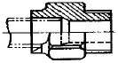
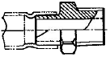
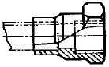
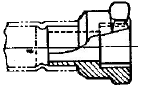
(정답률: 76%)
51. 보기 용접기호에서 인접한 용접부 간의 간격(피치)을 나타내는 것은?
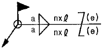
- a
- n
- ℓ
- (e)
(정답률: 80%)
52. 그림과 같은 입체도의 평면도로 가장 적합한 것은?
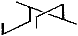
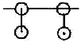
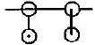
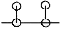
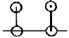
(정답률: 79%)
53. 다음 기호는 KS 배관의 간략 도시 방법 중 환기계 및 배수계 끝부분 장치의 하나이다. 평면도로 표시된 보기의 간략도시기호의 명칭은?
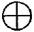
- 콕이 붙은 배수구
- 벽붙이 환기삿갓
- 회전식 환기삿갓
- 고정식 환기삿갓
(정답률: 79%)
54. 그림과 같은 도면에 지시기호에 ‘13-20드릴’ 이라고 구멍을 지시한 경우에 대한 설명으로 옳은 것은?
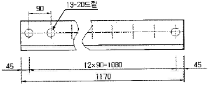
- 드릴 구멍의 지름은 13mm이다.
- 드릴 구멍의 피치는 45mm이다.
- 그릴 구멍은 13개이다.
- 드릴 구멍의 깊이는 20mm이다.
(정답률: 88%)
55. 공정에서 만성적으로 존재하는 것은 아니고 산발적으로 발생하며, 품질의 변동에 크게 영향을 끼치는 요주의 원인으로 우발적 원인인 것을 무엇이라 하는가?
- 우연원인
- 이상원인
- 불가피 원인
- 억제할 수 없는 원인
(정답률: 70%)
56. 계수 규준형 1회 샘플링 검사(KS A 3102)에 관한 설명 중 가장 거리가 먼 것은?
- 검사에 제출된 로트의 제조공정에 관한 사전 정보가 없어도 샘플링 검사를 적용할 수 있다.
- 생산자측과 구매자측이 요구하는 품질보호를 동시에 만족시키도록 샘플링 검사방식을 선정한다.
- 파괴검사의 경우와 같이 전수검사가 불가능한 때에는 사용할 수 없다.
- 1회만의 거래시에도 사용할 수 있다.
(정답률: 56%)
57. 어떤 공장에서 작업을 하는데 있어서 소요되는 기간과 비용이 다음 [표]와 같을 때 비용구배는 얼마인가? (단. 활동시간의 단위는 일(日)로 계산한다.)
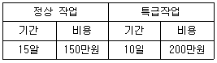
- 50,000원
- 100,000원
- 200,000원
- 300,000원
(정답률: 80%)
58. 방법시간측정법(MTM : Method Time Measur ement)에서 사용되는 1TMU(Time Measurement Unit)는 몇 시간인가?
- 1/100000시간
- 1/10000시간
- 6/10000시간
- 36/1000시간
(정답률: 78%)
59. 품질특성을 나타내는 데이터 중 계수치 데이터에 속하는 것은?
- 무게
- 길이
- 인장강도
- 부적합품의 수
(정답률: 85%)
60. 다음 중 품질관리시스템에 있어서 4M에 해당하지 않는 것은?
- Man
- Machine
- Material
- Money
(정답률: 83%)